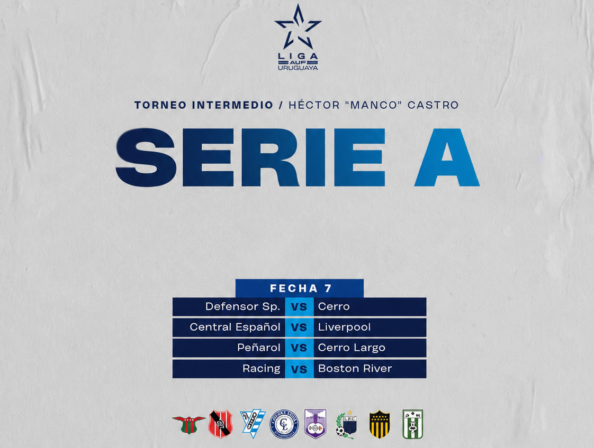
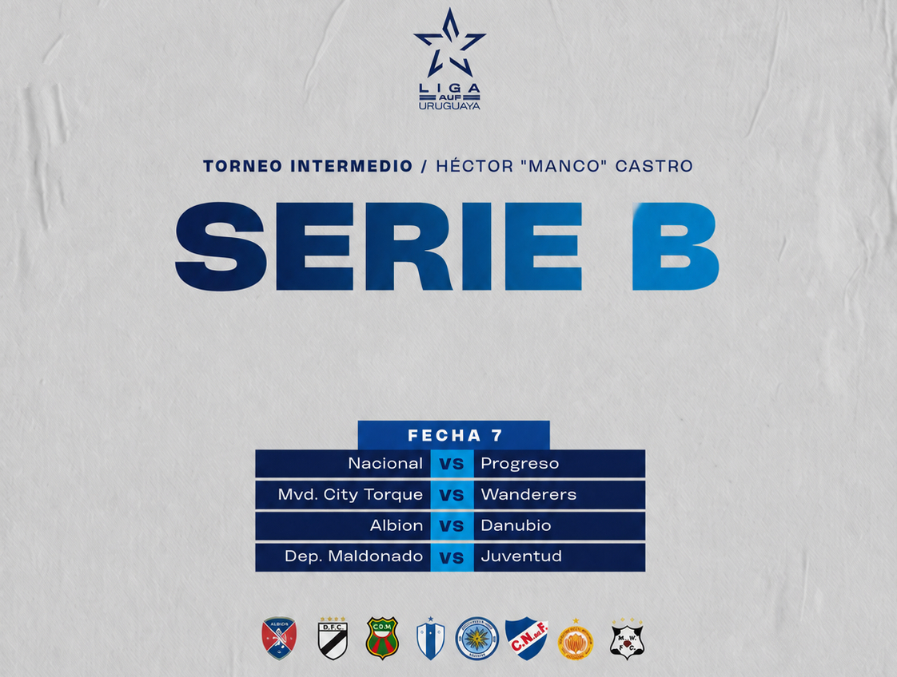

Copa Sudamericana
El Estadio Metropolitano Roberto Meléndez de Barranquilla, Colombia se prepara para una jornada histórica
Miles de hinchas esperan una jornada inolvidable en uno de los estadios más importantes del continente.
Noticias, resultados, fichajes y análisis de las ligas más importantes del mundo.
Copa Sudamericana
Miles de hinchas esperan una jornada inolvidable en uno de los estadios más importantes del continente.
Mercado de fichajes
Los equipos buscan reforzar sus planteles antes del comienzo de la próxima temporada.
Fútbol uruguayo
Los equipos ya conocen los días y horarios de sus próximos partidos.
Internacional
Los clubes luchan por el campeonato y la clasificación a los torneos internacionales.
Selección
El cuerpo técnico analiza la lista de jugadores que participarán en los próximos partidos.
Resultados
Toda la información sobre los partidos disputados y las posiciones del campeonato.
Fixture de la última fecha de las series A y B.

